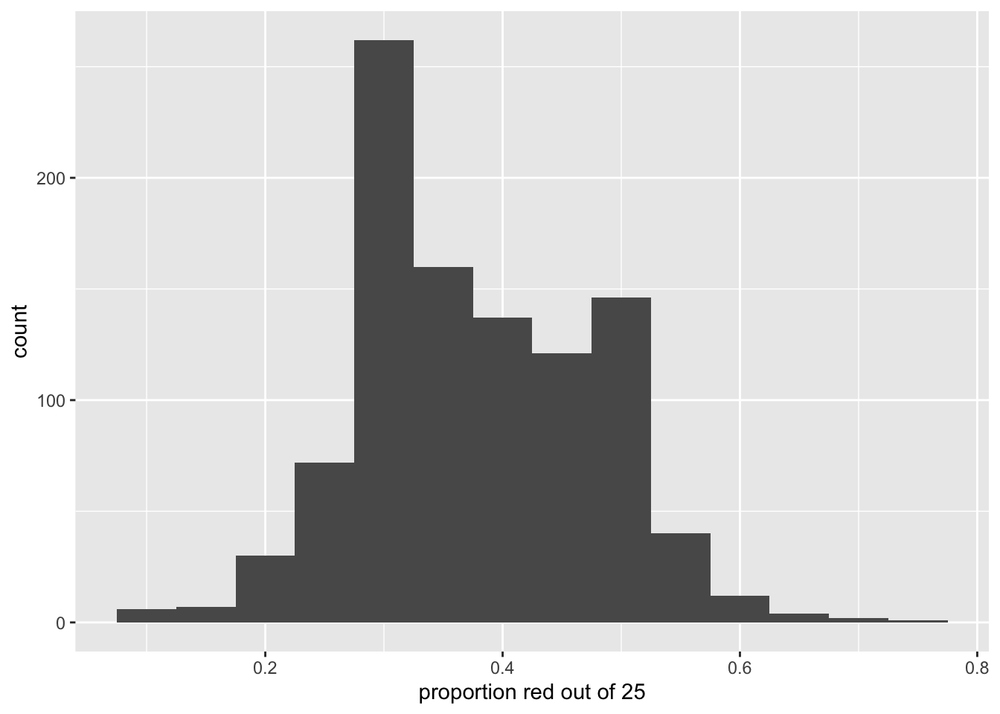
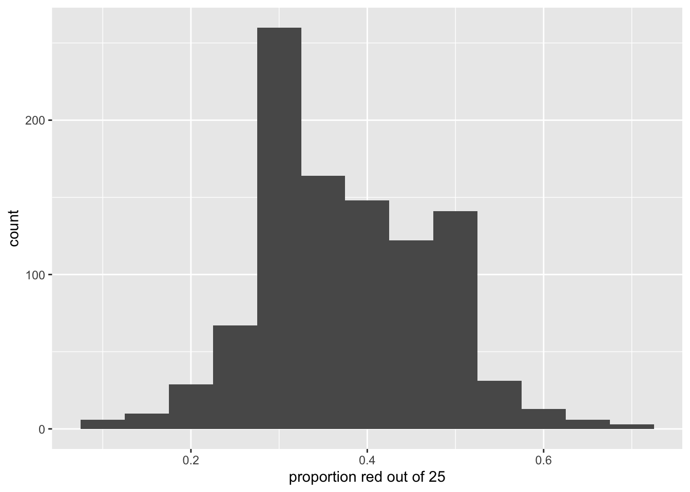
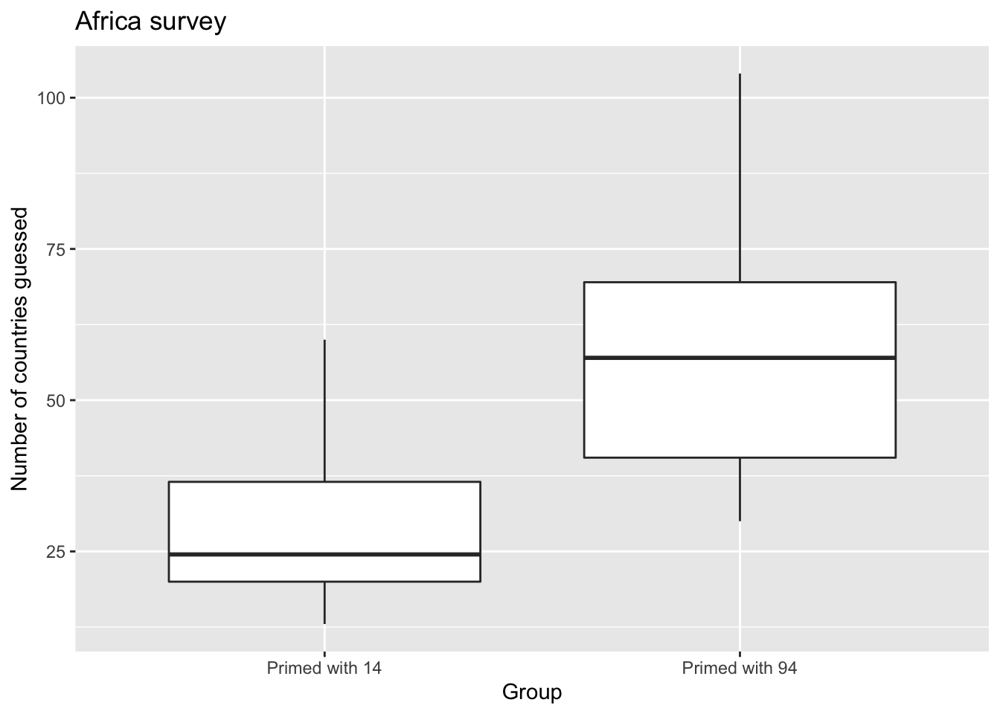
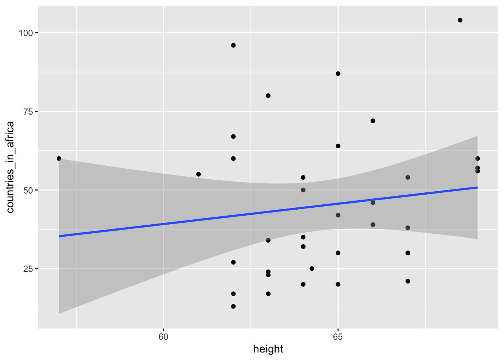
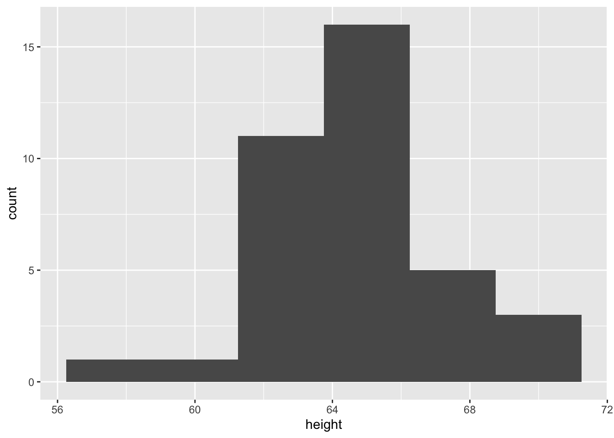
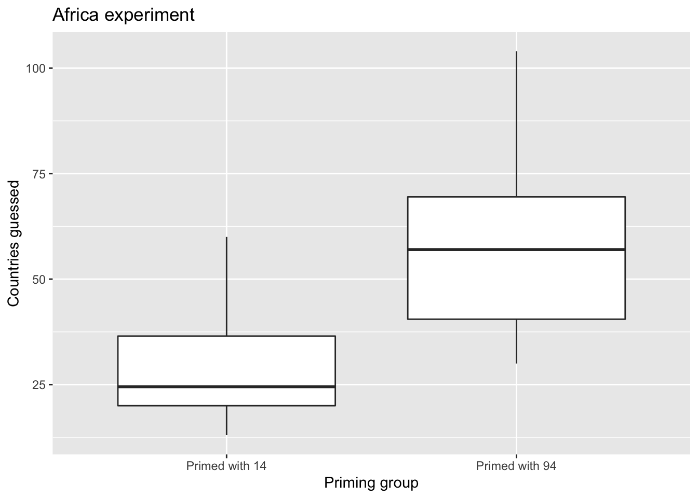

library(tidyverse)
# Load data and do minor data wrangling:
pennies <-
"https://docs.google.com/spreadsheets/d/e/2PACX-1vTlmubr007CcPwa3j-w1CydqNAQkq_cqA-QNxnjpSFno7OjCi8lW0noTgVM1-Fn9mtZ29DYd7PaC32I/pub?gid=101369328&single=true&output=csv" %>%
read_csv() %>%
select(group, group_average)
# Each row does not represent an individually resampled penny, rather each group's
# pre-summarized mean year:
View(pennies)
# Plot the bootstrap distribution:
ggplot(pennies, aes(x=group_average)) +
geom_histogram(binwidth = 2) +
labs(
x = "Average year",
title = "Bootstrap distribution for 18 groups' 50 pennies resampled with replacement",
subtitle = "Vertical red line is sample mean of original sample of 50 pennies"
) +
geom_vline(xintercept = 1995.44, col = "red")library(tidyverse)## ── Attaching packages ─────────────────────────────────────── tidyverse 1.3.1 ──## ✓ ggplot2 3.3.5 ✓ purrr 0.3.4
## ✓ tibble 3.1.3 ✓ dplyr 1.0.7
## ✓ tidyr 1.1.3 ✓ stringr 1.4.0
## ✓ readr 2.1.2 ✓ forcats 0.5.1## Warning: package 'readr' was built under R version 4.1.2## ── Conflicts ────────────────────────────────────────── tidyverse_conflicts() ──
## x dplyr::filter() masks stats::filter()
## x dplyr::lag() masks stats::lag()sampling_data <-
"https://docs.google.com/spreadsheets/d/e/2PACX-1vTlmubr007CcPwa3j-w1CydqNAQkq_cqA-QNxnjpSFno7OjCi8lW0noTgVM1-Fn9mtZ29DYd7PaC32I/pub?gid=0&single=true&output=csv" %>%
read_csv()## Rows: 41 Columns: 3## ── Column specification ────────────────────────────────────────────────────────
## Delimiter: ","
## chr (2): last_name, given_name
## dbl (1): number_of_red_balls##
## ℹ Use `spec()` to retrieve the full column specification for this data.
## ℹ Specify the column types or set `show_col_types = FALSE` to quiet this message.sampling_data <- sampling_data %>%
mutate(prop_red = number_of_red_balls/50)
ggplot(sampling_data, aes(x = prop_red)) +
geom_histogram(binwidth = 0.04) +
labs(x = "Proportion of balls that are red")## Warning: Removed 2 rows containing non-finite values (stat_bin).
library(tidyverse)
library(moderndive)
# Segment 1: sample size = 25 ------------------------------
# 1.a) Virtually use shovel 1000 times
virtual_samples_25 <- bowl %>%
rep_sample_n(size = 25, reps = 1000)
# 1.b) Compute resulting 1000 replicates of proportion red
virtual_prop_red_25 <- virtual_samples_25 %>%
group_by(replicate) %>%
summarize(red = sum(color == "red")) %>%
mutate(prop_red = red / 25)
ggplot(virtual_prop_red_25, aes(x= prop_red)) +
geom_histogram(binwidth = 0.05) +
labs(x = "proportion red out of 25")library(readr)
library(dplyr)
library(ggplot2)
library(moderndive)
africa <- read_csv("https://rudeboybert.github.io/SDS220/static/africa_results_2022.csv")## Rows: 37 Columns: 6## ── Column specification ────────────────────────────────────────────────────────
## Delimiter: ","
## chr (3): year, id_number, group
## dbl (2): height, countries_in_africa
## lgl (1): been_to_africa##
## ℹ Use `spec()` to retrieve the full column specification for this data.
## ℹ Specify the column types or set `show_col_types = FALSE` to quiet this message.# 1. Regression with one numerical x
# 1.a) EDA
ggplot(data = africa, mapping = aes(x = height, y = countries_in_africa)) +
geom_point() +
geom_smooth(method = "lm", se = FALSE) +
labs(x = "Height", y = "Number of countries guessed", title = "Africa survey")## `geom_smooth()` using formula 'y ~ x'
# 1.b) Fit model and get regression table
africa_model_num_x <- lm(countries_in_africa ~ height, data = africa)
get_regression_table(africa_model_num_x)# 2. Regression with one categorical x
# 2.a) EDA
ggplot(data = africa, mapping = aes(x = group, y = countries_in_africa)) +
geom_boxplot() +
labs(x = "Group", y = "Number of countries guessed", title = "Africa survey")
# 2.b) Fit model and get regression table
africa_model_cat_x <- lm(countries_in_africa ~ group, data = africa)
get_regression_table(africa_model_cat_x)library(ggplot2)
library(dplyr)
library(moderndive)
categ_regression_ex <- tibble(
name = c("Bert", "Bert", "Bert", "Flo", "Flo", "Flo", "Ivy", "Ivy", "Ivy"),
value = c(9, 10, 11, 11, 12, 13, 8, 9, 10)
)
categ_regression_ex# Step 1: Fit and save model
categ_model <- lm(value ~ name, data = categ_regression_ex)
# Step 2: Output regression table
get_regression_table(categ_model)# Output point-by-point information. Note:
# value = y outcome variable
# name = x explanatory variable (categorical)
# value_yat = y_hat fitted values
# residual = y - y_hat errors
get_regression_points(categ_model)library(readr)
library(ggplot2)
library(dplyr)
africa <- read_csv("https://rudeboybert.github.io/SDS220/static/africa_results_2022.csv")## Rows: 37 Columns: 6## ── Column specification ────────────────────────────────────────────────────────
## Delimiter: ","
## chr (3): year, id_number, group
## dbl (2): height, countries_in_africa
## lgl (1): been_to_africa##
## ℹ Use `spec()` to retrieve the full column specification for this data.
## ℹ Specify the column types or set `show_col_types = FALSE` to quiet this message.# Look at variable types
glimpse(africa)## Rows: 37
## Columns: 6
## $ year <chr> "Junior", "Senior", "Sophomore", "First-year", "So…
## $ height <dbl> 63.00, 68.50, 65.00, 65.00, 63.00, 62.00, 64.00, 6…
## $ been_to_africa <lgl> FALSE, FALSE, FALSE, FALSE, FALSE, FALSE, FALSE, F…
## $ countries_in_africa <dbl> 80, 104, 64, 42, 34, 96, 35, 60, 60, 67, 56, 39, 7…
## $ id_number <chr> "Odd", "Odd", "Odd", "Odd", "Odd", "Odd", "Odd", "…
## $ group <chr> "Primed with 94", "Primed with 94", "Primed with 9…# 1. Scatterplot
ggplot(data = africa, mapping = aes(x = height, y = countries_in_africa)) +
geom_point() +
geom_smooth(method="lm")## `geom_smooth()` using formula 'y ~ x'
# 2. Histogram
ggplot(data = africa, mapping = aes(x = height)) +
geom_histogram(binwidth = 2.5)
# 3. Boxplot
ggplot(data = africa, mapping = aes(x = group, y = countries_in_africa)) +
geom_boxplot() +
labs(x = "Priming group", y = "Countries guessed", title = "Africa experiment")
library(readr)
library(ggplot2)
africa <- read_csv("https://rudeboybert.github.io/SDS220/static/africa_results_2022.csv")## Rows: 37 Columns: 6## ── Column specification ────────────────────────────────────────────────────────
## Delimiter: ","
## chr (3): year, id_number, group
## dbl (2): height, countries_in_africa
## lgl (1): been_to_africa##
## ℹ Use `spec()` to retrieve the full column specification for this data.
## ℹ Specify the column types or set `show_col_types = FALSE` to quiet this message.ggplot(data = africa, mapping = aes(x = group, y = countries_in_africa)) +
geom_boxplot() +
geom_hline(yintercept = 54, col ="red")